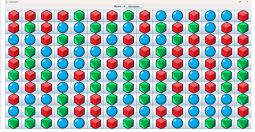
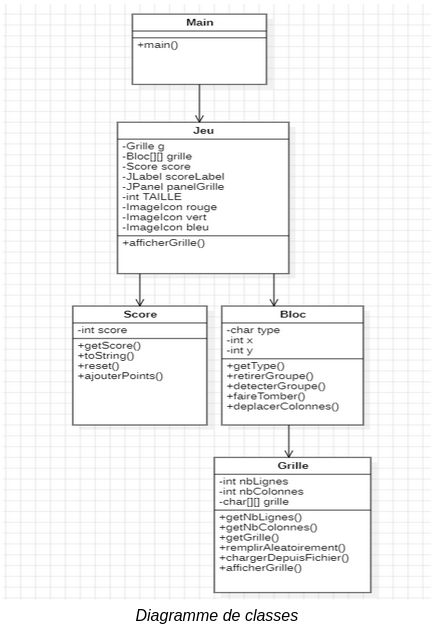

Présentation des travaux pratiques ou mini-projets :
Dans le cadre de ma formation de BTS SIO, j'ai cultivé mes compétences via divers projets de développement informatique.
Première année de BTS SIO :
JEU SAMEGAME
Dans le cadre d'un projet de groupe, nous avons développé un jeu contenant une grille composée de différents blocs de couleurs.
Le concept du jeu était de permettre au joueur de générer une grille aléatoire ou à partir d’un fichier, et de supprimer les blocs de couleurs tout en visualisant son score. Le jeu prend fin lorsque la grille est vide.
Le langage utilisé lors du développement du jeu est le langage Java, L’éditeur de texte utilisé est Sublime Text.
Le serveur GIT nous a permis de collaborer et d’échanger nos codes.

FONCTIONNEMENT DU JEU
Le jeu génère une fenêtre composée d’une grille d’éléments. Les éléments sont des images représentant trois formes de couleurs différentes : Rouge, Verte, Bleue.
Lorsque le joueur lance le jeu et survole les différents blocs de formes avec la souris, un surlignement jaune apparait (voir vidéo ci-dessous).
Lorsque le joueur clique sur un bloc, celui-ci disparaît et les éléments restants sont repositionnés. Si une colonne est vide, les colonnes restantes se décalent vers la gauche.
Aussi, le score du joueur est affiché en haut de l’écran et est mis à jour lorsqu'un bloc est sélectionné.
Le bouton Réinitialiser, également situé en haut de l’écran permet d’afficher une grille vide et de remettre le score à zéro.
Le programme regroupe 5 fichiers : Grille.java Bloc.java Score.java Jeu.java Main.java
Chaque fichier est consacré à l’une des cinq classes principales de notre jeu. Ces classes ont été déterminées via un travail de réflexion en amont, et recensés dans un diagramme de classes à partir du logiciel StarUML :

CONCLUSION
D’une part, ce projet m’a permis de mieux comprendre des principes fondamentaux de la programmation orientée objet, notamment le principe de séparation des responsabilités. Chaque classe doit avoir une seule responsabilité bien définie, et son code doit être isolé dans un fichier à part. Créer des fichiers différents pour chaque classe assure une meilleure lisibilité et a facilité la maintenance du programme. En effet, lorsqu’une fonctionnalité a été oubliée ou qu’un bug a été détecté, il a été facile de déterminer quel fichier était responsable et de corriger l’erreur.
D’autre part, ce projet m’a permis de me familiariser davantage avec des aspects techniques de la programmation. En effet, les notions d’héritage, d’interface et de récursivité ont été largement abordées durant le développement du jeu.